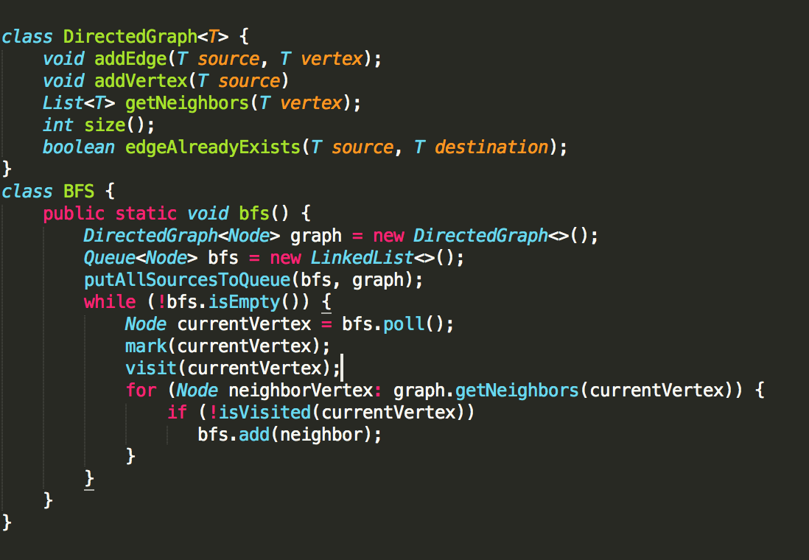
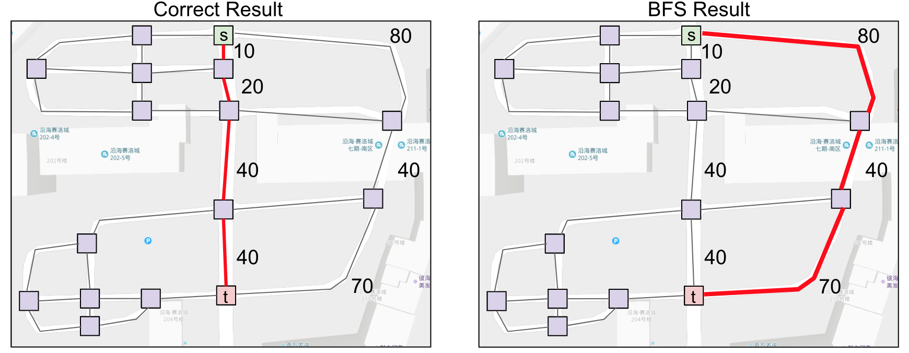
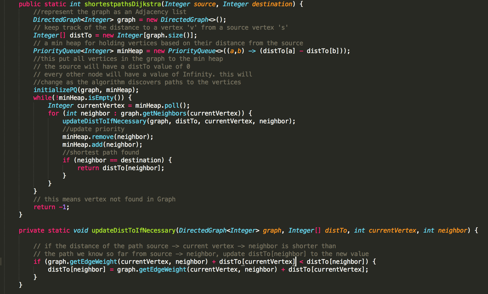
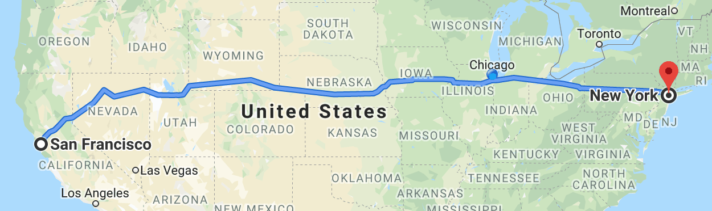
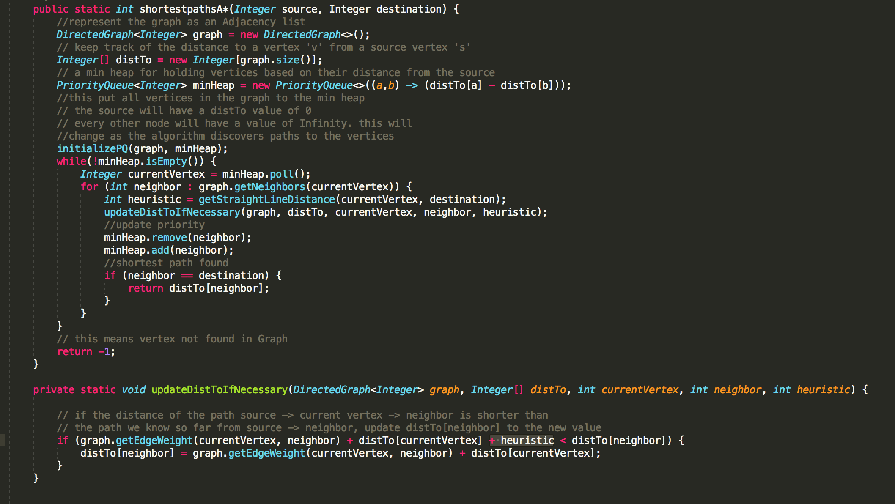

Clennita Justice
Sr. Program Manager, Product Strategy
Big table
Graphs are used to express non-hierarchically related items. Graphs can represent networks such as pipelines & roads, processes such as Markov chains or some sort of partial ordering such as makefiles.

One thing we may want to do with graphs is to find the shortest path between vertices in the graph based on the relationship represented by the graph. Here's a psuedocode of an algorithm that finds the shortest path in a graph:

So the goal is to traverse each vertex of the graph in order of 'closeness' to the source. the 'fringe' above needs to be a data structure that supports operations for finding these vertices.
In an unweighted graph, our define 'closeness' as how many levels away a vertex 'v' is from the source. so on the first iteration, we put all vertices that are an edge away from the source into the collection. In the next iterations, we should expect to first get vertices. So really, the collection we want is one that supports a first in first out kind of operation aka a queue. this algorithm is called BFS.
Here's code for implementing BFS:
Now if the graph is a weighted graph, it is not enough to define 'closeness' as just the number of edges a vertex sits from the source. This is because each edge has a weight.
Instead it's the sum of weights along the path that leads to a vertex 'v' from the source. as the algorithm goes on, we might find more paths to vertex 'v', a path whose sum of weights is different. the 'fringe' data structure above needs to be one that supports operations for determining the vertex with the smallest sum of weights along currently discovered path. this is to say as the algorithm progresses, the value for 'closeness' of a vertex to the source might change as the algorithm finds more paths, but regardless, the fringe needs to be able to return the vertex with the smallest weight. The ideal data structure for this is a priority queue where the priority of the elements in the priority queue is determined based on how close they are to the source so far.
With both algorithms, not only do you get paths, but the paths are also guaranteed to be the shortest. So in addition to determining connectivity between nodes, you also get the shortest distance between nodes.
The instrinsic characterstic of these two algorithms, which is the fact that they explore all nodes closest to them first before progressing to explore further can sometimes be a problem in areas such as navigation.
For example, say you want to find the shortest path from san franciso to new york
If you use Dijkstra to find the shortest path, it will first explore places closest to san fransico even those that are on the pacific ocean even though that is clearly not the right path to take.
To address this, we can make a minor change to how we define "closeness". Instead of just defining closeness as the sum of weights along a path from the source, we add a third variable, a heuristic, to that value in order to guid the algorithm. This heuristic can be the straight line distance from the current vertex 'v' to the destination. Because of this added variable to our definition of closeness, vertices further to the left of san francisco will not appear to be as close to the source as they actually are. The algorithm will tend to explore more towords the right. This variation of Dijkstra's algorithm is called the A* algorithm.
